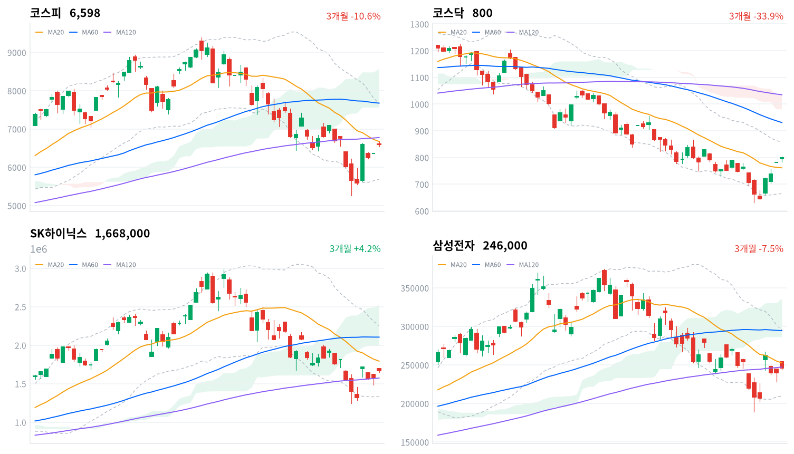

전일 밤 미국 필라델피아 반도체지수(SOX)가 6.55% 급등하고(마이크론 +7.62%·인텔 +10.84%), AI 데이터 분석기업 팔란티어가 매출 서프라이즈(전년비 +93%)를 내며 AI 수요 기대가 재점화됐다. 여기에 중동 지정학 리스크 완화로 국제유가·미 국채금리가 동반 하락하며 위험자산 선호가 뒷받침됐다. 삼성전자·SK하이닉스가 거래대금 1·2위(5.58조원·6.28조원)를 차지했고, 전자장비와기기(+12.63%)·전기장비(+9.08%) 등 비반도체 부품주까지 폭넓게 올랐다.
동인이날 급등의 1차 동인은 미국발 반도체 훈풍이다. 밤사이 SOX가 6.55% 급등했고 마이크론(+7.62%)·인텔(+10.84%)·엔비디아(+2.56%)가 동반 강세를 보인 가운데, 팔란티어의 2분기 매출이 전년비 +93%(약 2조7,700억원)로 서프라이즈를 내며 AI 인프라 수요 기대가 재점화됐다. 여기에 미·이란 협상 기대감이 번지며 국제유가·미 국채금리가 동반 하락해 위험자산 선호를 뒷받침했고, 국내 국고채 금리도 3년물 -7.1bp·10년물 -11.0bp로 커브 전반이 하락하며 성장주 밸류에이션에 우호적인 여건을 만들었다. 이 훈풍이 삼성전자·SK하이닉스를 넘어 전자장비와기기(+12.63%, breadth 84.9%)·전기장비(+9.08%, breadth 88.6%)·통신장비(+8.84%, breadth 83.6%) 등 비반도체 부품주까지 확산시키며 코스피를 3.76% 끌어올렸다.
정합성수급과 가격은 코스피에서 대체로 정합적이다. 외국인이 +1조4,464억원(당일 잠정) 순매수하며 지수 상승을 이끌었고, 프로그램 매매에서도 비차익이 +6,964억원 순매수(전체 +7,027억원)로 같은 방향을 가리켜 방향성 바스켓 매수가 실렸음을 뒷받침한다. 다만 개인은 -1조1,844억원 순매도로 차익실현에 나섰고 기관도 -2,838억원 순매도해, 외국인 홀로 지수를 견인한 하루였다. 업종 내부를 보면 반도체와반도체장비(+4.09%, breadth 92.4%, 171종목 중 158종목 상승)는 광범위한 상승이 확인되는 반면, 건설(+5.48%, breadth 73.1%)·비철금속(+5.0%, breadth 72.5%)은 등락률만 보면 상위권이지만 breadth가 낮아 개별종목 쏠림에 가깝다 — 상승률 상위가 곧 업종 전체의 주도를 의미하지는 않는다. 코스닥은 오히려 외국인(-2,979억원)·기관(-1,101억원)이 순매도하고 개인(+3,941억원)이 지수를 지탱해, 외국인 자금이 코스피 대형주에 집중되고 코스닥까지는 확산되지 않았다는 판단을 뒷받침한다.
확인 트리거코스피 종가(6,598.26)는 20일선(6,673.96, -1.13% 이격)과 120일선(6,776.12, -2.62%)을 모두 밑돌고, 일목균형표 구름대(7,557.91~8,561.66)와도 큰 격차가 남아 있어 20일선·120일선 회복 여부가 1차 확인 지점이다. 전환선(6,131.77)은 이미 넘어선 상태라 되돌림 시 이 레벨이 1차 지지선이 된다. 정책 측면에서는 8월 27일 한은 금통위와 한미 관세협상 후속 조치(전략산업 2,000억 달러 투자 배분 세부계획, 일정 미확정)가 다음 촉매로 꼽힌다.
| 지수 | 종가 | 등락률 | 일중고가 | 일중저가 |
|---|---|---|---|---|
| 코스피 | 6,598.26 | +3.76% | 6,674.66 | 6,540.27 |
| 코스닥 | 799.59 | +2.42% | — | — |
코스닥은 일중 고가·저가 데이터가 제공되지 않아 종가·등락률만 표기했다.
코스피는 전일 종가 6,358.95 대비 6,603.48로 갭 상승 출발했다(약 +3.85%). 개장 직후 30분봉 기준 9시30분 6,656.78까지 치솟으며 일중 고가(6,674.66) 부근까지 근접했다가, 이후 매물이 나오며 10시30분 6,574.03까지 밀려 일중 저가(6,540.27) 부근에서 오전 저점을 다졌다.
11시 6,645.51로 재반등했다가 11시30분 6,589.02로 다시 밀리는 등 오전 내내 등락을 반복했고, 낮 12시~13시 사이에도 6,605~6,632 구간에서 방향성 없이 좁게 움직였다. 13시30분 6,600.36으로 잠시 밀린 뒤 14시부터 다시 오르기 시작해 14시30분 6,634.72로 오후 고점을 형성했다.
이후 상승폭을 서서히 반납하며 15시 6,632.43, 15시30분 6,598.25를 거쳐 종가 6,598.26(+3.76%)으로 마감해, 오후 고점 대비 소폭 낮은 수준에서 장을 마쳤다. 코스닥은 30분봉 데이터가 제공되지 않아 장중 궤적은 다루지 않지만, 반도체·전기장비 훈풍이 확산되며 3거래일 연속 상승 흐름 속에 800선을 목전에 두고 마감했다(세계일보).

코스피·코스닥·SK하이닉스·삼성전자 3개월 일봉 캔들에 20·60·120일 이동평균, 볼린저밴드(점선), 일목균형표 구름대(음영)를 오버레이했다. 상승은 녹색, 하락은 적색 캔들로 표시된다.
코스피는 6,598.26으로 마감해 20일선(6,673.96, -1.13% 이격)과 120일선(6,776.12, -2.62%), 60일선(7,674.22, -14.02%)을 모두 밑돌아 이동평균선 배열이 혼조 상태를 유지했다. 일목균형표상 전환선(6,131.77)은 종가 아래 있지만 기준선(6,965.25)과 구름대(7,557.91~8,561.66)는 모두 위쪽에 있어 가격이 구름대 하단 밑에 머무는 국면이고, 볼린저밴드 %b는 0.462로 중심선(6,673.96)과 하단(5,681.36) 사이 중하단권에 걸쳐 있다.
상승 시나리오는 20일선(6,673.96)과 120일선(6,776.12) 회복이 1차 확인 지점이며, 이를 넘어서면 기준선(6,965.25)→구름대 하단(7,557.91)→볼린저 상단(7,666.56)→60일선(7,674.22)→20일 스윙 고점(7,791.66)→구름대 상단(8,561.66)을 거쳐 60일 스윙 고점(9,385.59)까지 저항이 이어진다. 하락 시에는 이미 회복한 전환선(6,131.77) 이탈→볼린저 하단(5,681.36)→20·60일 스윙 저점(5,262.77)이 최후 지지선 순서다.
코스닥은 799.59로 마감해 20일선(761.46, +5.01% 이격)과 일목균형표 기준선(793.22)을 모두 웃돌았지만 60일선(930.7, -14.09%)·120일선(1,035.01, -22.75%)은 여전히 크게 밑돌아, 단기·중기·장기 이동평균이 순서대로 낮아지는 역배열 구조 자체는 유지됐다. 구름대(980.43~1,033.98)는 훨씬 위쪽이라 가격은 여전히 구름대 아래 국면이며, 볼린저 %b는 0.697로 중심선을 넘어선 중상단권까지 올라왔다.
상승 트리거는 볼린저 상단(858.22) 돌파이며, 이후 20일 스윙 고점(867.38)→60일선(930.7)→구름대 하단(980.43)→구름대 상단(1,033.98)→120일선(1,035.01)을 거쳐 60일 스윙 고점(1,225.29)까지 저항이 겹겹이 남아 있다. 하락 시에는 오늘 되찾은 20일선(761.46)이 1차 지지선이며, 이탈하면 전환선(717.24)→볼린저 하단(664.7)→20·60일 스윙 저점(630.99)이 최후 지지선이다.
SK하이닉스는 1,668,000원으로 마감해 120일선(1,573,725원, +5.99% 이격)은 웃돌았지만 20일선(1,792,550원, -6.95%)과 60일선(2,104,900원, -20.76%)은 여전히 크게 밑돌아 이동평균선 배열이 혼조다. 일목균형표 전환선(1,570,000원)은 종가 아래 있고 기준선(1,994,000원)·구름대(1,991,500원~2,526,000원)는 그보다 더 위쪽에 있어 가격은 구름대 아래 국면을 벗어나지 못했으며, 볼린저 %b는 0.365로 중심선(1,792,550원) 아래 하단권에 위치한다.
상승 시나리오는 20일선(1,792,550원) 회복을 기점으로 구름대 하단(1,991,500원)→기준선(1,994,000원)→60일선(2,104,900원)→볼린저 상단(2,253,523원)→20일 스윙 고점(2,329,000원)→구름대 상단(2,526,000원)을 거쳐 60일 스윙 고점(2,987,000원)까지 저항이 이어진다. 하락 시에는 120일선(1,573,725원)과 전환선(1,570,000원)이 근접해 있어 이 구간이 1차 지지대이며, 이탈하면 볼린저 하단(1,331,576원)→20·60일 스윙 저점(1,246,000원)이 최후 지지선이다.
삼성전자는 246,000원으로 마감해 120일선(247,287원, -0.52% 이격)과 20일선(252,650원, -2.63%)을 모두 근소하게 밑돌고 60일선(294,542원, -16.48%)과는 격차가 더 벌어져 있어 이동평균선 배열이 혼조다. 전환선(228,100원)은 종가 아래 있으나 기준선(266,100원)·구름대(286,350원~336,500원)는 위쪽에 있어 가격이 구름대 아래에 머무는 국면이며, 볼린저 %b는 0.423으로 중심선(252,650원) 아래쪽에 위치한다.
상승 트리거는 120일선(247,287원) 회복 이후 20일선(252,650원)→기준선(266,100원)→구름대 하단(286,350원)→60일선(294,542원)→볼린저 상단(295,560원)→20일 스윙 고점(300,000원)→구름대 상단(336,500원)을 거쳐 60일 스윙 고점(374,500원)까지 열려 있다. 하락 시에는 전환선(228,100원) 이탈→볼린저 하단(209,740원)→20·60일 스윙 저점(189,200원)이 최후 지지선 순으로 짚인다.
위 레벨은 모두 이동평균·볼린저밴드·일목균형표·스윙 고저의 기계적 계산값이며 투자 권유가 아니다.
코스피·코스닥 수급은 2026-08-05 당일 잠정치다(kr_flows.json label: 당일 잠정치, stale: false). 코스피에서 외국인이 +1조4,464억원 순매수하며 지수 상승을 견인한 반면, 개인은 -1조1,844억원 순매도로 차익실현에 나섰고 기관도 -2,838억원 순매도했다. 코스닥에서는 개인이 +3,941억원 순매수로 지수를 지탱한 가운데 외국인(-2,979억원)·기관(-1,101억원)이 모두 순매도해, 외국인 자금이 코스피 대형주에 집중되고 코스닥까지는 확산되지 않았음을 보여준다.
| 시장 | 개인 | 외국인 | 기관 |
|---|---|---|---|
| 코스피 (당일 잠정) | -11,844억원 | +14,464억원 | -2,838억원 |
| 코스닥 (당일 잠정) | +3,941억원 | -2,979억원 | -1,101억원 |
단위 억원. kr_flows.json 기준 2026-08-05 당일 잠정치(label: 당일 잠정치, stale: false).
| 시장 | 차익 순매수 | 비차익 순매수 | 전체 순매수 |
|---|---|---|---|
| 코스피 (당일 잠정) | +63억원 | +6,964억원 | +7,027억원 |
| 코스닥 (당일 잠정) | +11억원 | -2,614억원 | -2,603억원 |
단위 억원. kr_program.json 2026-08-05 당일 잠정치(row[0]).
코스피 비차익 순매수(+6,964억원)는 방향성 바스켓 매수로, 외국인의 현물 순매수(+1조4,464억원)와 같은 방향을 가리켜 이날 상승이 선물 재정거래가 아니라 실수요 매수에 기반했다는 판단을 뒷받침한다. 차익거래는 규모 자체가 작아(+63억원) 방향성 판단에 미치는 영향은 제한적이다. 코스닥은 비차익이 -2,614억원 순매도로 외국인(-2,979억원)·기관(-1,101억원)의 순매도 방향과 일치해, 개인 순매수(+3,941억원)가 프로그램 밖에서 지수를 떠받친 하루였음을 시사한다.
| 종목 | 구분 | 거래대금(백만원) | 거래대금(조원) |
|---|---|---|---|
| SK하이닉스 | 종목 | 6,280,287 | 6.28조원 |
| 삼성전자 | 종목 | 5,577,419 | 5.58조원 |
| 대원전선 | 종목 | 677,716 | 0.68조원 |
| SK하이닉스 레버리지 | 레버리지(롱) | 547,957 | 0.55조원 |
| 삼성전자우 | 종목(우선주) | 409,347 | 0.41조원 |
| SK이터닉스 | 종목 | 386,606 | 0.39조원 |
| TIGER 반도체TOP10 | 업종테마ETF | 384,545 | 0.38조원 |
| KODEX 반도체레버리지 | 업종테마ETF | 323,775 | 0.32조원 |
| SOL AI반도체TOP2플러스 | 업종테마ETF | 284,958 | 0.28조원 |
| 한화솔루션 | 종목 | 237,166 | 0.24조원 |
같은 기초자산 ETF를 방향별로 묶고 지수·해외 ETF 제외. 단위 백만원(조 환산 병기).
SK하이닉스·삼성전자 본주 거래대금(각각 6.28조원, 5.58조원)이 압도적 1·2위를 차지했고, TIGER 반도체TOP10·KODEX 반도체레버리지·SOL AI반도체TOP2플러스 등 반도체 업종테마 ETF 세 종목이 나란히 상위권에 올라 자금이 개별 종목을 넘어 ETF까지 폭넓게 몰렸다.
오늘 상위 10위 안에는 SK하이닉스 레버리지(0.55조원)만 있고 이를 상쇄할 인버스(숏) 상품은 이름을 올리지 못했다 — 개인 투자자들의 상승 베팅이 하락 베팅을 압도했다는 뜻이다. 다만 코스피 개인 수급이 전체로는 -1조1,844억원 순매도(당일 잠정)였다는 점과 함께 보면, 개인은 현물에서는 차익을 실현하면서 레버리지 ETF로는 상승 추세에 베팅하는 이중적인 모습을 보인 하루로 읽힌다.
macro 섹터 스니펫의 1D 상위권인 조선(+5.01%)·철강소재(+4.85%)·건설(+4.65%)·반도체(+4.30%)를 kr_industry.json의 세분화 업종 데이터로 다시 짚어보면, 조선은 +5.32%(breadth 90.0%, 30종목 중 27종목 상승)로 폭넓은 상승 주도가 확인되고 반도체와반도체장비도 +4.09%(breadth 92.4%, 171종목 중 158종목 상승)로 종목 수 대비 상승 종목 비중이 가장 높은 업종에 속한다. 두 분류 체계는 산업 구분이 달라 수치가 정확히 일치하지는 않지만 방향은 같다.
반면 건설은 세분화 데이터에서 +5.48%(breadth 73.1%, 78종목 중 57종목 상승)로 상승률만 보면 최상위권이지만 유동성 크로스체크에서는 좁은 상승·개별종목으로 분류됐다 — macro 스니펫 1D 3위라는 순위만으로 업종 전체가 주도했다고 보기는 어렵다. 이날 가장 폭넓게 오른 업종은 전자장비와기기(+12.63%, breadth 84.9%, 106종목 중 90종목 상승)·전기장비(+9.08%, breadth 88.6%)·통신장비(+8.84%, breadth 83.6%)로, 삼성전기·LG이노텍 등 반도체 부품·소부장주 강세가 업종 전반으로 번진 결과로 풀이된다.
SK하이닉스(+5.90%, 이투데이)와 삼성전자(+3.96%, 이투데이)가 밤사이 미국 반도체주 급등의 직접 수혜를 받으며 거래대금 1·2위(6.28조원·5.58조원)를 나란히 차지했다. 하루 만에 시가총액이 삼성전자는 약 1,210조원에서 1,549조원으로(+339조원), SK하이닉스는 966조원에서 1,255조원으로(+289조원) 불어났다고 보도된다(파이낸셜뉴스, 이투데이).
대원전선은 거래대금 3위(0.68조원)로 급부상했다. AI 데이터센터發 전력 인프라 수요 확대와 HVDC(고압직류송전)·해저케이블 수주 기대, LME 구리 가격 상승에 따른 제품 단가 상승이 겹치며 '전력 인프라' 관련주로 매수세가 몰렸고, 1분기 매출 +25.1%·영업이익 +76.2% 등 실적 개선도 뒷받침됐다(CBC뉴스). 다만 52주 최저 대비 급등한 종목이라 단기 과열에 대한 경계도 함께 필요하다.
삼성전기·LG이노텍은 반도체 기판·부품 훈풍에 두 자릿수 급등을 기록하며 전자장비와기기 업종(+12.63%)의 폭넓은 강세를 견인한 것으로 파악된다. 한화솔루션은 거래대금 상위(0.24조원)에 이름을 올렸으나 개별 재료는 추가 확인이 필요하다.
원/달러 환율은 이번 데이터셋에 마감 종가가 포함되지 않았다. 오전 9시 기준 1,430.5원이 장중 참고치로 보도됐으나(research notes) 이는 개장 직후 스냅샷일 뿐 마감 확정치가 아니어서, 외국인 순매수와 환율의 삼각 연계는 이번 회차에서 점검하지 않는다.
| 지표 | 금리 | 전일比(bp) | 기준일 |
|---|---|---|---|
| 국고채 3년 | 3.669% | -7.1bp | 2026-08-05 |
| 국고채 10년 | 4.15% | -11.0bp | 2026-08-05 |
| CD 91일 | 2.93% | 0.0bp | 2026-08-05 |
| 회사채 AA- 3년 | 4.392% | -6.6bp | 2026-08-05 |
| 한국은행 기준금리 | 2.75% | +25.0bp | 2026-07 기준(월간 지표) |
단위 연%. ECOS(한국은행 경제통계시스템) 기준. 한국은행 기준금리는 월간 지표로 2026-07 갱신치이며 report_date(2026-08-05)와 기준일이 다르다.
국고채 3년(-7.1bp)·10년(-11.0bp)이 나란히 하락하며 10년-3년 스프레드는 전일 0.52%p(4.26%-3.74%)에서 오늘 0.481%p(4.15%-3.669%)로 좁혀졌다. 10년물이 3년물보다 더 크게 내려 커브가 강세 속에 평탄해지는(불 플래트닝) 모습으로, 중동 리스크 완화에 따른 국제유가 하락이 인플레이션 우려를 낮추며 장기물 금리를 더 끌어내린 것으로 풀이된다.
회사채 AA- 3년과 국고채 3년의 스프레드는 0.723%p(4.392%-3.669%)로 전일(0.718%p)보다 소폭 벌어졌다 — 코스피·코스닥 동반 급등에도 신용 스프레드는 미세하게나마 확대돼, 위험자산 랠리가 신용시장까지 완전히 스며들지는 않았음을 시사한다. 국고채 3년물(3.669%)과 정책금리(2.75%)의 스프레드는 0.919%p로 전일(0.99%p)보다 줄어, 시장이 추가 긴축 기대를 소폭 낮춘 것으로 해석할 여지가 있다.
8월 1일 시한을 앞두고 한미가 관세협상을 타결했다. 상호관세 15%·자동차 관세 15%로 확정됐고, 트럼프 행정부가 예고한 반도체·의약품 품목관세도 최혜국(MFN) 대우를 확보해 경쟁국 대비 불리하지 않은 조건을 얻었다고 보도된다. 한국은 에너지 구매·조선산업 협력을 포함해 총 3,500억 달러 대미 투자를 약속했고, 이 중 2,000억 달러는 반도체·원자력·배터리·바이오·핵심광물 등 전략 산업에 투입될 예정이다(FKI, 통상뉴스).
대미 수출 관세 불확실성이 걷히며 반도체·자동차 등 대미 노출이 큰 업종의 이익 전망 가시성이 높아지는 이익 경로가 작동하고, 관세 리스크 프리미엄 해소는 대형 수출주의 멀티플 회복으로도 이어지는 경로다.
반도체(삼성전자·SK하이닉스)·자동차(부품 포함)가 직접 수혜 업종으로 지목되며, 이날 반도체와반도체장비(+4.09%, breadth 92.4%)·자동차부품(+3.57%, breadth 76.1%)이 폭넓은 상승을 보여 정합적이다. 다만 관세 타결 자체는 8월 초 이미 알려진 재료라 이날 급등의 1차 동인은 미국 반도체주 훈풍이며, 관세 이슈는 이미 선반영된 배경 재료로 판단된다.
전략산업 2,000억 달러 투자 배분의 세부 집행 계획과 개별 기업 참여 여부가 다음 확인 지점이다. 확정된 발표 일정은 미확정이다.
한국은행 금융통화위원회는 7월 16일 기준금리를 2.50%에서 2.75%로 25bp 인상했다. 이후 국고채 금리는 이날 3년물 3.669%(-7.1bp)·10년물 4.15%(-11.0bp)로 오히려 하락했다(토스뱅크).
인상 이후 금리 하락은 추가 긴축 우려 완화(통화정책 경로)와 미 국채금리 동반 하락(중동 리스크 완화發 글로벌 채권 강세, 크로스에셋 경로)이 겹친 결과로 해석된다. 금리 하락은 할인율 경로로 성장주·고밸류 반도체주에 우호적이다.
금리 민감도가 높은 성장주·반도체 대형주 랠리와 방향이 정합적이다. 반면 은행(+0.74%, breadth 72.7%)은 이날 상승률 하위권에 머물러, 금리 하락 국면에서 상대적으로 소외되는 정책·업종 반응이 이론과 부합한다.
다음 금통위는 8월 27일이다. 반도체 랠리가 이어지는 가운데 한은이 자산가격 과열을 얼마나 경계하는 발언을 내놓을지가 관전 포인트다.
국민연금이 지난 5월 28일 국내주식 전략적 자산배분(SAA) 목표비중을 기존 14.9%에서 20.8%로 5.9%포인트 상향 조정했다. 국내 증시 활황으로 기존 한도를 유지했다면 최대 170조원 규모의 강제 매도가 발생했을 상황을 피한 조치로, 2027년에도 20.8% 목표비중을 유지하기로 했다(머니투데이).
연기금발 대규모 리밸런싱 매도 압력이 구조적으로 제거되는 수급 경로가 작동하며, 삼성전자·SK하이닉스처럼 연기금 보유 비중이 큰 대형주의 수급 하방 리스크가 낮아졌다.
대형주 중심의 코스피가 반도체 랠리에도 불구하고 큰 저항 없이 6,500선을 넘어선 배경 중 하나로 해석할 수 있으나, 이날 상승은 외국인 순매수(+1조4,464억원, 당일 잠정)가 직접 동인이라 연기금 요인은 선반영된 배경 조건이지 당일 직접 동인은 아니다.
국민연금 기금운용본부의 분기별 자산배분 현황 공시가 다음 확인 지점이며, 확정 발표일은 미정이다.